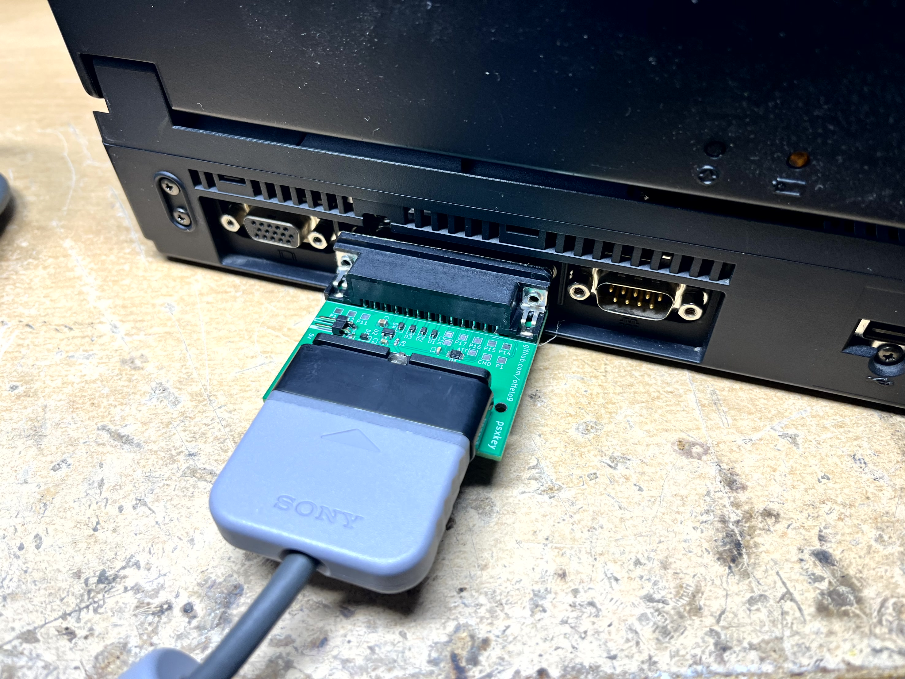
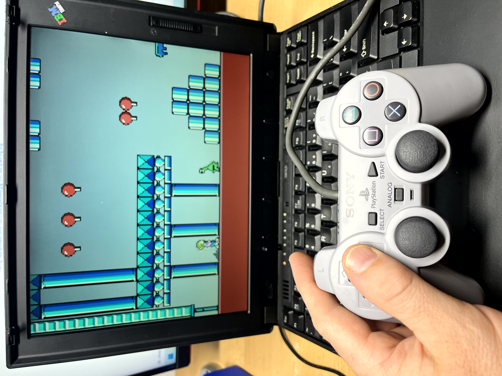
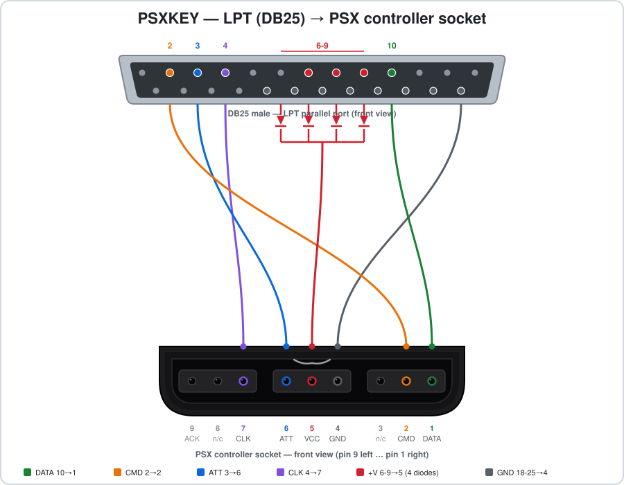
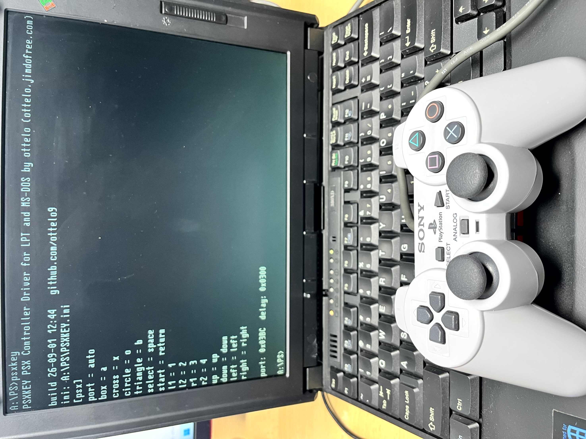
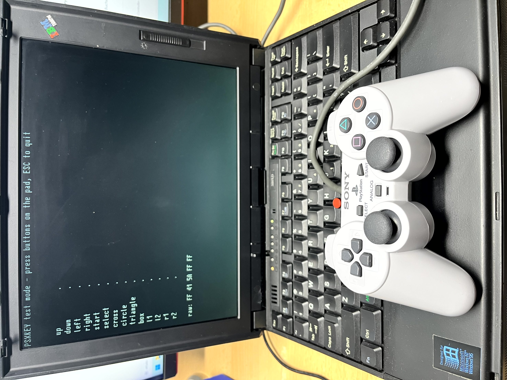

PSXKEY macht aus einem PlayStation-Controller eine Tastatur. Der PSX(PS1/PS2)-Controller wird über den Parallelport (LPT) an einen alten PC oder Laptop (RetroPC) angeschlossen. Das Programm wandelt jeden Tastendruck des Playstation-Controllers in einen beliebigen Tastatur-Tastendruck um. So lassen sich DOS-Spiele mit dem Gamepad steuern.
PSXKEY turns a PlayStation controller into a keyboard. The PSX(PS1/PS2) pad connects to the parallel (LPT) port of an old PC or laptop (RetroPC). The program converts every button press of the Playstation controller into a keystroke. That lets you play DOS games with a gamepad.
Die Tasten werden dabei nicht in den BIOS-Puffer geschrieben, sondern direkt auf Ebene des Tastaturcontrollers eingeschleust. Deshalb funktioniert es auch mit Spielen, die die Tastatur selbst auslesen — z.B. Commander Keen oder King’s Chase.
Keys are not written into the BIOS buffer but injected at keyboard controller level. That is why it also works with games that read the keyboard themselves — Commander Keen or King’s Chase, for example.


PSXKEY.COM — etwa 8 KB, läuft ohne InstallationPSXKEY.COM — about 8 KB, needs no installationIch biete den fertigen Adapter „psxkey“ auf eBay an — bestückte Platine im Gehäuse, anstecken und loslegen.
I sell the finished “psxkey” adapter on eBay — assembled board in an enclosure, just plug it in.
Ein 25-poliger D-Sub-Stecker, eine PSX-Buchse, vier Dioden. Mehr ist es nicht — kein Widerstand, kein IC.
A 25-pin D-Sub plug, a PSX socket, four diodes. That is all — no resistors, no ICs.

1. In den DOS-Modus starten. PSXKEY braucht echtes DOS. In einem DOS-Fenster unter Windows funktioniert es nicht, weil Windows den Parallelport abschirmt.
1. Get into DOS mode. PSXKEY needs real DOS. It will not work in a DOS window under Windows, because Windows shields the parallel port.
CONFIG.SYS darf kein EMM386 geladen seinshsucdhd.com shsucdx.comCONFIG.SYS2. Programm kopieren. PSXKEY.COM herunterladen und auf den RetroPC kopieren — am besten auf eine Diskette oder via USB-Stick unter Windows 98
2. Copy the program. Download PSXKEY.COM and copy it onto the RetroPC — a floppy disk is a good old fashion way or use a USB-drive on Windows 98.
3. Adapter anstecken, Controller einstecken, dann:
3. Plug in the adapter and the controller, then run:
PSXKEYBeim Start sucht das Programm automatisch den richtigen LPT-Port und stellt das passende Timing selbständig ein und zeigt das Ergebnis an. Die Einstellungen werden in die psxkey.ini geschrieben (falls noch nicht vorhanden, wird diese erstellt).
On startup the program automatically search the correct LPT port and the right timing by itself and shows the results. The settings will be saved into psxkey.ini (will be created if not found).
e.g. ini: C:\PSXKEY.INI
port: 0x03BC delay: 0x0300
4. Fertig. Spiel starten und mit dem Controller spielen.
4. Done. Start your game and play with the pad.
PSXKEY — installierenPSXKEY /T — Test: alle Tasten live anzeigen
(ESC beendet). Der schnellste Weg zu prüfen, ob Adapter und
Controller funktionieren.PSXKEY /U — wieder entfernenPSXKEY /? — Hilfe und VerdrahtungPSXKEY — installPSXKEY /T — test: show all buttons live
(ESC quits). The quickest way to check adapter and controller.PSXKEY /U — unloadPSXKEY /? — help and wiring
/T zeigt alle Tasten live an./T shows every button live.Die Zuordnung steht in PSXKEY.INI neben dem Programm und
lässt sich mit jedem Texteditor ändern. Fehlt die Datei, wird sie beim ersten
Start automatisch angelegt.
The mapping lives in PSXKEY.INI next to the program and can
be edited with any text editor. If the file is missing it is created on first start.
[psx]
port = auto
cross = x
circle = o
start = return
up = up
down = downdelay in der INI — auf sehr schnellen Rechnern muss die
Übertragung langsamer laufen.
If the pad does not respond, a different delay value in
the INI usually fixes it — on very fast machines the transfer has to run
slower.